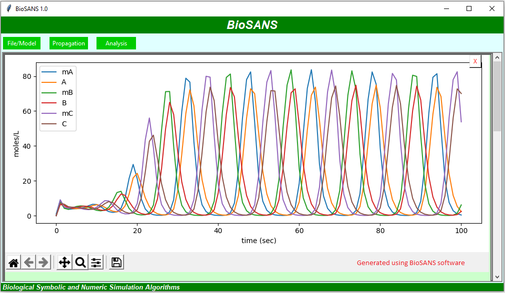

BioSANS is a free software for systems biology which is currently being developed in Academia
Sinica Institute of Chemistry. The goal of this development is to make systems biology available
to non-domain experts in the easiest possible way. Currently, BioSANS supports model creation,
ODE propagation in both deterministic and stochastic settings, and post simulation analysis. It
can be used either via the GUI, the command line interface, and as a python import for experts
users. BioSANS passed majority of the SBML semnatic and stochastic test cases. It also support
parameter estimation and provides an easy to prepare input which follows basic elementary
equation in chemistry. In the input file, reaction, initial concentration, and rate constants
are required but the propensity expression is optional. The algorithm in BioSANS can infer the
propensity from the reactions provided. If the users need special or non mass action type
propensity, it can be encoded in the topology file as well. Complicated conditional expression
and concentration modification are also supported in the topology file.
The following summarized the symbolic and numeric features currently supported;
1. Species analytical expression - works for most linear differential equation and few
non-linear ordinary differential equations
2. LNA covariace matrix - works for most linear differential equation and few non-linear ODE
3. Steady state concentration - generally works for most problems especially linear ODE
4. Network localization - topology based sentitivity matrix
1. Linear noise approximation
2. Parameter estimation
3. Network localization
4. Deterministic analysis (ODE integration)
* odeint - python LSODA library
* runge-kutta4 (tau-adaptive and fixed interval version)
* Euler (two differnt types of tau-adaptive version)
5. Stochastic modeling
* Chemical Langevine equation (tau-adaptive and fixed interval version)
* Tau-leaping algorithm (2 different versions/implementation of Yang Cao's algorithm)
* Gillespie direct method
1. Plotting (trajectory, density, etc.)
2. Calculation of correlation, covariance, fano-factor, etc.
3. Phase portrait
4. etc.

 Example commands:
Example commands:
propagate
A => B, 0.2 &
B => C, 0.3
where
A=100 &
B=0.2 &
C=0
using CLE
with
tn=50 &
tlen=1000 &
miter=30 &
mult_proc=True &
fout=Traj1
;
It can also be type in the console in inline format as follows
propagate A => B, 0.2 & B => C, 0.3 where A=100 & B=0.2 & C=0
using CLE with tn=50 & tlen=1000 & miter=2 & mult_proc=True & fout=Traj2;
from BioSANS2020 import biosans_lib as biosans
# Parameter estimation example
modelA = """
Function_Definitions:
Ao = 100
Co = 0
#REACTIONS
A => B, -1
B => C, -1
@CONCENTRATION
A, Ao
B, -1
C, Co
"""
dataA = """
time,A,C
0,100,0
1,60.65306595,5.775043762
2,36.78794412,17.97900716
3,22.313016,31.82710907
4,13.5335283,45.00173948
5,8.208499842,56.53020973
10,0.673794694,88.56392495
15,0.055308438,97.30571352
20,0.004539994,99.38712194
25,0.000372665,99.86228791
30,3.06E-05,99.96919344
35,2.51E-06,99.99311965
40,2.06E-07,99.99846425
45.5,1.32E-08,99.99970501
50,1.38E-09,99.99992352
"""
if __name__ == '__main__':
my_model = biosans.model(modelA).data(dataA)
data = my_model.run("k_est6")
my_model.clean()